OpScale：面向 LLM 服务的算子级资源供给与自动扩缩容
OpScale 研究云端大模型服务中一个经常被默认、却很少被重新审视的系统设计选择：扩缩容究竟应以整模型副本，还是以模型内部算子为单位。论文由莱斯大学 Xingqi Cui 等人完成，微软研究院与 Microsoft Azure Research 参与合作；2026 年 8 月 13 日以 arXiv v1 公开，共 22 页、29 幅图。论文唯一入口为 arXiv:2608.13499。截至本次核验，未发现独立公开代码仓库；论文中的实现与实验信息足以理解设计，但完整复现仍依赖作者后续开放实现与配置。
现有 LLM serving 把整模型当作扩缩容单元，既跟不上秒级突发流量，也会把非瓶颈算子一并复制，最终在 SLO 违约与 GPU 低利用之间反复摇摆。真正悬而未决的问题是：扩缩容的最小单元是否应从模型副本下沉到算子。
1. 背景和问题
1.1 模型级扩缩容为什么追不上生产流量
在线生成式模型的资源管理目标天然是双重的：一方面，用户看到的是 Time-to-First-Token（TTFT）和 Time-Between-Tokens（TBT），尾部延迟必须守住；另一方面，云平台承担的是 GPU 数量、GPU-hours 与集群功耗，不能长期按峰值静态预留。论文援引生产经验指出，如果按需求的 P95 预留，文本和多模态工作负载的保留 GPU 池利用率仍可能只有 50% 与 39%。因此，autoscaling 并不是可有可无的成本优化，而是让容量随负载变化、同时不破坏 SLO 的基本机制。
传统做法把一个完整模型实例看作最小单位。其直接好处是部署简单：增加容量时再启动一份相同的模型、加载所有权重并接入统一调度即可。但这一动作至少有两类结构性浪费。第一，模型是 Attention、线性投影、MLP、归一化、embedding、MoE expert 等异构算子的 DAG；当瓶颈只落在其中一小部分时，整模型复制会连同所有轻量算子一起复制。第二，完整权重装载与 engine control plane 初始化很慢。论文给出的主实验中，Qwen2-7B 模型级扩容平均需要 10.68 秒，而生产需求的峰谷变化已经发生在秒级甚至十秒窗口内部。扩容太慢时，要么请求先堆进队列并推高 P99 TTFT，要么运营者保留整模型 warm standby，换来的则是持续计费的空闲显存与算力。
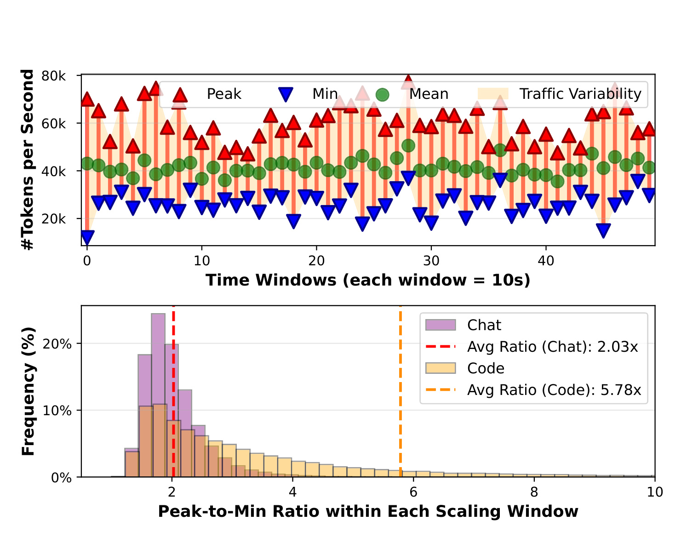
Figure 2 不是合成 workload，而是作者采用的生产 LLM inference trace 的统计。上半图把每个十秒窗口内 token throughput 的峰值、最小值和均值画在一起；同一小时级服务过程中，窗口内部的峰谷差反复出现，说明“上一窗口平均负载”不足以预测下一秒的容量需求。下半图把峰谷比做成分布：Chat 服务的平均比值约为 2.03 倍，Code 服务约为 5.78 倍。也就是说，即使模型级控制器每十秒决策一次，它看到的仍可能只是已经被平均掉的峰值；若一次 full-model scale-out 本身又要十秒左右，就会在容量真正到位前错过整个突发。图中 Code 的长尾更重，也提醒我们：不同产品 workload 的响应窗口并不相同，不能只凭单一 QPS 阈值设定统一控制周期。OpScale 后续采用一秒 runtime loop、亚秒 operator actuation，正是针对这条时间尺度证据。
1.2 算子异质性让“整模型一起扩”失去依据
把 scaling unit 下沉有一个前提：不同算子必须确实表现出可利用的资源异质性。作者在 Qwen2-7B、Llama3-8B、Qwen2-57B-A14B、Mixtral-8x7B 与 Qwen2.5-VL-32B 上逐算子测量 computation time、weight/transient memory、通信量和对 SM allocation 的敏感性。测试覆盖 batch size、128 至 64K 的 sequence length，以及 dense、MoE、视觉编码器加 LLM 等架构。结果不是简单的“Attention 总是最慢”。短序列下，linear projection、MLP 或 FusedMoE 可能主导计算；序列拉长后，Attention 的增长斜率更陡，瓶颈才迁移到 Attention。显存维度又是另一套次序：weight memory 相对固定，activation 和 KV cache 随请求形态增长，而 FlashAttention 避免显式构造二次方大小的 attention-score matrix，使实测显存增长更接近线性。
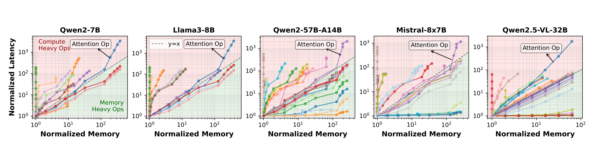
Figure 4 的每条折线代表一个算子，横轴是相对显存，纵轴是相对延迟，点从左到右对应不断增大的输入长度；红色 y=x 线提供同比例增长参照。五个 panel 的共同信息是：算子不会沿同一条斜率移动。Qwen2-7B 与 Llama3-8B 中，Attention 在长上下文处逐渐成为 compute-heavy，而一批 memory-heavy 算子的 latency 增长没有同步放大；MoE 模型里 expert/linear 路径的散布更宽，意味着复制完整 MoE 实例尤其容易把大量非瓶颈权重一起复制。Qwen2.5-VL-32B 则表明多模态输入数量也会改变 Attention 与视觉侧算子的压力。图支持的是“按当前 workload 找瓶颈”，并不支持给每种模型预先写死一张算子优先级表。对 autoscaler 而言，sequence distribution、batching 与模型 architecture 都必须进入 profile 查询。
1.3 需要同时解的不是一个，而是三层问题
算子级 scaling 并非把每个 operator 扔到独立 GPU 就结束。若每个新副本都独占设备，资源碎片和跨设备 activation transfer 可能抵消细粒度收益；若多个副本共置，又会竞争 HBM bandwidth、L2 cache、SM scheduler 与互连。于是系统必须同时回答三件事：当前流量下，每个算子需要多少 batch、replica 和 tensor-parallel shard；这些逻辑副本应放到哪张 GPU、分到多少 SM；执行时如何动态注册副本、路由请求、分配/回收显存并隐藏跨设备通信。
论文把 prefill 或 decode 的一次 DAG iteration latency 写成计算、通信和排队之和。TTFT 主要约束 prefill，TBT 主要约束后续逐 token decode，但两者使用相同的端到端结构：
符号解释：$V$ 是 operator DAG 的节点集合，$T_v$ 是算子 $v$ 的计算时间，$C_v$ 是向下游发送 activation 的通信时间，$W_v$ 是该算子 replica pool 中的等待时间，$T_{\mathrm{SLO}}$ 是当前 iteration 的时延预算。这个式子强调，单独把某个 kernel 加速并不等于端到端满足 SLO；排队和通信也会把 critical path 推过阈值。反过来，只给最慢算子加副本也未必正确，因为 batch size、parallelism 和 placement 会共同改变三个时间项。
OpScale 的研究问题因此可以更精确地表述为：在不断变化的到达率与 sequence-length distribution 下，能否用可在线求解的方式选择每个算子的 $B_v,R_v,P_v,A_v,S_v$，既满足 TTFT/TBT，又最小化逻辑 shard-replica 数、物理 GPU 数与功耗？论文先用 exhaustive oracle 估算 opportunity，在线系统则必须用毫秒级 heuristic 逼近该解。这个区别很重要：离线 oracle 得到的 30%-60% 理论节省不是系统的运行方式，真实贡献在于 profiling、provisioning、placement 与 execution plane 能把这部分空间变成可执行计划。
2. 方法
2.1 Operator Profiling：把异质性压成可查询的 profile
OpScale 把系统分成控制面与执行面。控制面接收模型拓扑、operator profile、GPU topology，以及实时 traffic/request distribution；它先产出逻辑的 operator configuration，再把副本映射到物理设备。执行面由集中式 Replica Manager 驱动，维护副本生命周期并把请求逐 stage 送入不同 operator replica pool。接口落在现有 LLM engine 的 model runner 周围，因此 input processing、batch scheduling、PagedAttention 与 tensor-parallel backend 可继续复用。真正的系统边界不是“重写一个推理引擎”，而是在现有 engine 内暴露可动态变更的 operator pool，并让控制面用同一套端到端 latency 模型约束每次变更。
profile 的原始状态空间非常大：batch size 可到 256，sequence length 离散覆盖 1 至 65536，SM percentage 又在 1 至 100 之间；朴素枚举每个 operator 超过 $10^7$ 个配置，即使一次 microbenchmark 只用 100 ms，也要以周计。作者利用两个结构压缩它。其一，许多算子对 $B,L,S$ 的响应虽斜率不同，却呈单调或分段平滑趋势，因此只随机采样部分点，再用 non-parametric piecewise interpolation 估算未测点。其二，相邻 layer 或同族模型会复用 Attention、MLP 等同构 kernel，profile 可跨层、跨版本复用；只有 kernel structure 真正改变的算子需要重测。论文报告在一台 GB200 node 上，57B 模型的一次离线 profiling 可在一小时内完成。
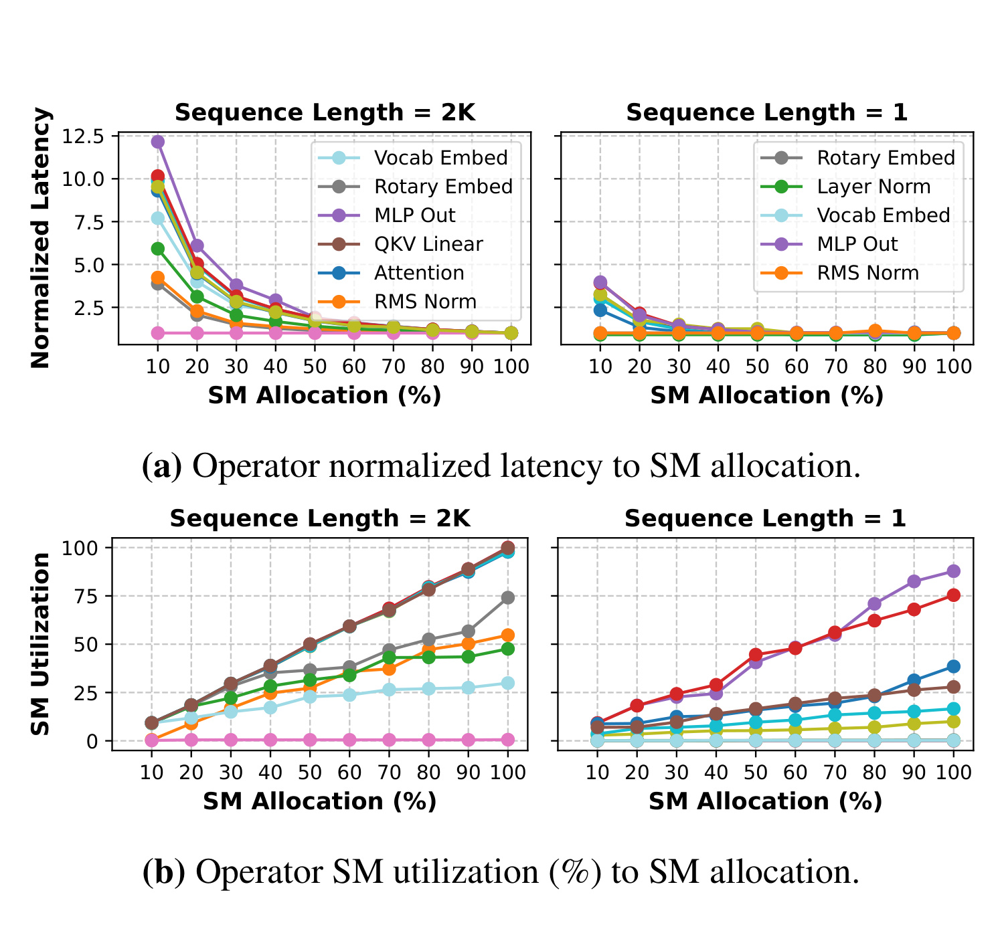
Figure 7 把 Qwen2-7B 的多种 operator 放到不同 SM allocation 下测量。上排是 normalized latency：2K sequence 的 prefill 对 SM 数非常敏感，Attention、MLP Out、QKV Linear 等曲线会在 SM 缩小时明显抬升；1-token decode 的大部分曲线更平，因为短 kernel 本就没有填满全部 SM。下排给出原因：长序列算子的 SM utilization 随 allocation 接近饱和，而单 token 阶段的绝对利用率仍低。这个观测不能简化为“decode 可以无限共享”：decode 的 TBT 预算往往更紧，排队和调度开销仍可能占据更大比例。它真正提供的是 placement 依据——长序列 critical operator 应得到更多空间资源，短序列轻量 operator 才有较安全的 colocate 空间，而且 allocation 必须与 workload phase 一起查询。
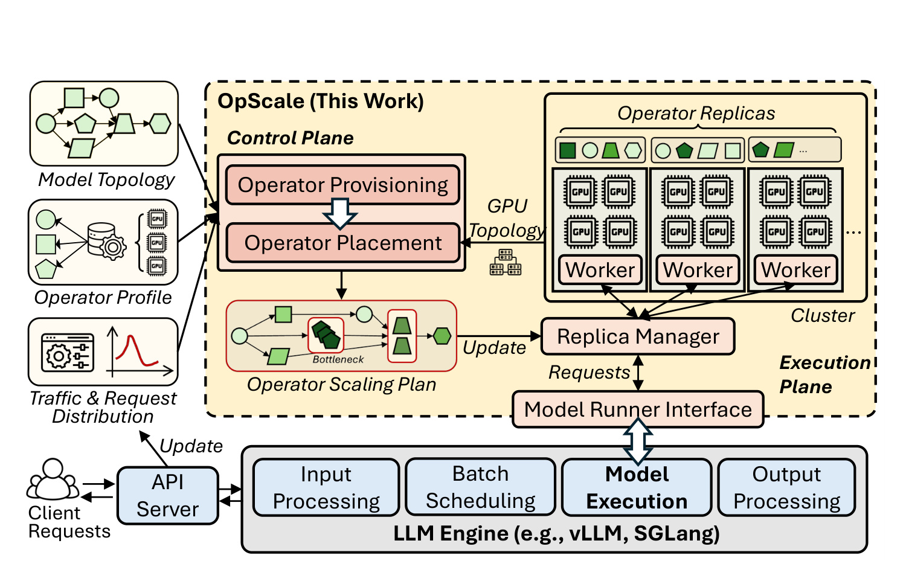
Figure 11 展示 profile 如何进入运行链路。左侧三类输入分别描述 DAG 结构、算子行为和当前流量；控制面的 Operator Provisioning 先计算 scaling plan，Operator Placement 再结合 GPU topology 决定位置。右侧 cluster 中，一个 operator 可拥有多个独立 replica，Replica Manager 接收计划更新，同时响应 model runner 的请求。底部保留常规 LLM engine pipeline，说明 OpScale 不替换 tokenization、batch scheduling 与输出处理。图里两条 update 路径也揭示了离线/在线分工：模型 topology 与 profile 低频更新，traffic distribution 高频更新；在线 loop 不重新跑 profile，而是查表、求解和部署。这让 1 秒控制周期在工程上可行。
2.2 Operator Provisioning：从排队稳定点迭代关键路径
provisioning 的输入是 profile、DAG、当前 QPS 与输入长度分布、TTFT/TBT SLO 和初始 parallelism；输出是每个算子的 batch size $B_v$、replica count $R_v$ 与 shard 数 $P_v$。它不是对全部组合 exhaustive search，而分成初始化与 critical-path 迭代。初始化继承部署给定的 tensor/pipeline parallelism，遍历可行 batch size，并根据服务率求不积压的最小 replica 数：
符号解释：$\mu_v(b,p)$ 是 batch size 为 $b$、parallelism 为 $p$ 时的 request service rate；$\lambda$ 是沿 DAG 传播后的 operator arrival rate；$R_v(b)$ 是让 $\lambda<R_v\mu_v$ 成立的最少副本数。初始化从“队列不发散”的硬下界开始，再选最小化局部 sojourn time $T_v+W_v$ 的 $(B_v,R_v)$。因此较大 batch 虽提高吞吐，却也可能延迟凑批；较多 replica 会降低等待，却增加 weight memory 和 shard 成本，二者由 profile 和 SLO 共同权衡。
每个 pool 的等待时间由 $M/M/R_v$ 近似，论文采用 Erlang-C：
符号解释：$\rho_v$ 是 replica pool 利用率，$C(R_v,\rho_v)$ 是到达请求需要等待的 Erlang-C 概率项。当 $\lambda$ 接近总服务能力 $R_v\mu_v$ 时，分母迅速缩小，$W_v$ 非线性上升。这解释了为什么 autoscaler 不能只让平均 utilization 刚好等于 100%，也解释了 Figure 13 中 model-level baseline 有更多 GPU 却仍出现 TTFT spike：副本配置与瓶颈迁移不匹配时，局部队列仍会爆涨。
初始化后，算法重复计算 DAG critical-path latency。若 $T_{\mathrm{total}}>T_{\mathrm{SLO}}$，就找到 critical path 上贡献最大的 operator，比较增加 $R_v$、调整 $B_v$ 或 $P_v$ 的单位资源时延收益，选择最有效的动作；若已有充足 slack，则反向放松 non-critical operator，回收副本或资源，直到继续缩减会破坏稳定性或 SLO。逻辑资源目标为：
符号解释：$P_vR_v$ 是 operator $v$ 的逻辑 shard-replica demand，总和是 provisioning 阶段的资源代理量。它不是最终物理 GPU 数；多个 shard 可能在 placement 时共置。离线 brute-force oracle 用于机会分析，在线 greedy plan 的资源成本据论文测量保持在 oracle 的 8% 以内，而 Qwen2-7B 的全计划计算中位数仅 2.6 ms。
2.3 Operator Placement：干扰感知的 best-fit 与局部性
逻辑副本确定后，placement 要把它们装进尽量少的 GPU，同时遵守 memory 与 SM capacity：
符号解释：$A_v$ 表示 operator shard 所在设备，$M_v=M_v^{\mathrm{weight}}+M_v^{\mathrm{transient}}$ 包含权重以及 activation/KV cache 等瞬态显存，$S_v$ 是分给该 shard 的 SM 百分比。第一条避免 OOM，第二条保证 CUDA Green Context 的空间份额不超额。但只检查容量仍不够：两个算子即使 memory 与 SM 总和可容纳，也可能共同争用 HBM、L2 或 scheduler，导致 latency 超出 profile 的独占值。
作者为每个 operator pair 离线共跑，按 5% SM granularity 扫描，并定义经验干扰因子：
符号解释：$T_v(b,p)$ 是相同 batch 与 SM share 下的独占 latency，$\widetilde{T}_v(b,p)$ 是共置后的 latency，二者之比 $I_{d,v}$ 表示 slowdown。对三算子共置，系统用 pairwise factor 乘积近似；在线查表为 $O(1)$。候选设备上的实际预测时间回写为：
符号解释：$T'_v$ 是物理 placement 下的 operator latency。系统将它与 communication cost 一起回灌端到端 critical-path 模型；若重算后违反 SLO，该位置即使容量上“放得下”也会被拒绝。因此，provisioning 的逻辑最优不能被独立接受，placement 必须重新验证物理共置后的 SLO；否则细粒度 packing 很容易把节省 GPU 变成新的 tail-latency 干扰。
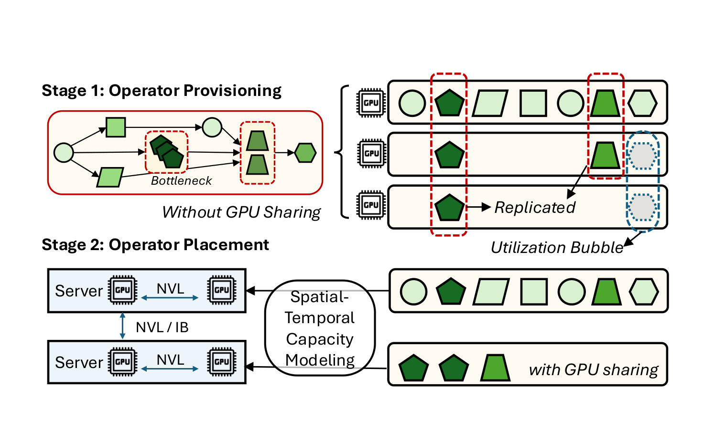
Figure 12 上半部分先画 provisioning：系统定位 bottleneck，只复制必要的深色 operator；如果每份副本按传统方式独占 GPU，就会留下大块 utilization bubble。下半部分再画 placement：多个 server 通过 NVL 或 InfiniBand 连接，spatial-temporal capacity model 判断哪些副本可安全共置。具体 heuristic 先把每个 operator 都需要的最小 full-model base instances 放好，再将 extra replicas 按 computation cost 降序排列，优先安置“重”算子以减少 tail fragmentation；随后做 multi-dimensional best-fit，只有干扰调整后的端到端 latency 仍满足 SLO才接受。若多个位置接近，则依次偏好同设备、同 server 的 NVLink/NVL、最后才是跨 server InfiniBand。这张图也说明更快互连为何会放大 GB200 上的收益：通信代价下降后，更多逻辑可行的共置方案会通过物理 SLO 检查。
2.4 Runtime Serving：让计划在请求运行中生效
execution plane 解决“计划算出来以后，现有 engine 能否不停机切图”的问题。Replica Manager 维护动态 registry；forward_pre_hooks 提供 late binding，在 operator call 到达时选择当前 replica，使 in-flight request 可以零停机切换执行路径。新增副本需要运行时显存，而常规 engine 往往启动时一次性预分配。OpScale 集成 kvcached，构造 ElasticBlockManager，在副本创建时分配、删除时回收权重与 transient buffer，避免为未来可能出现的 operator 预留整模型容量。多流执行若为每层、每算子、每副本各建一个 CUDA stream，会产生 $O(D|V|R)$ 的 stream switch 开销。系统利用 layer 顺序执行的特性，通过 GlobalStreamPool 跨 layer 回收 stream，把资源开销压到 $O(R)$；MultiDeviceStreamPool 则让远程 activation transfer 与下一算子的 kernel execution pipeline overlap。每个 stream 绑定 Green Context，SM share 来自 placement 的干扰模型。请求调度使用按 replica capacity 加权的 shortest-queue，依赖数据以轻量 CUDA event 同步。
这种 runtime 并不是把每个 operator 当微服务后在 CPU 上串行 RPC。数据仍在 GPU stream 与 NVLink/NVL/InfiniBand 路径中移动，关键是把 operator boundary 暴露给 cluster control，同时尽量保留 kernel 级执行效率。论文报告 execution dispatch overhead 约占一次 500 ms prefill iteration 的 0.3%，即约 1.5 ms；其中剩余约 90 微秒 CPU 工作可通过 lazy synchronization 与 pipeline 隐藏。系统还支持 op-level resharding，但作者观察 replica scaling 的 throughput-per-GPU 更好，而 resharding 的 P99 1.15 秒开销约是 replica scaling 的 11 倍，因此在线策略主要依靠水平复制，不把动态改 tensor parallelism 当首选。
3. 实验结果
3.1 实验设置与可比口径
原型建立在 nano-vLLM 上，约 1.7 万行 Python。nano-vLLM 继承 PagedAttention、continuous batching 和 tensor parallelism 等关键优化。为避免“不同 engine 实现”污染比较，DynamoLLM、AIBrix 和 vLLM Production Stack 都被移植到同一 nano-vLLM backend，使用相同模型、kernel、batch scheduler、KV-cache manager 与 tensor-parallel backend；主要差异是 autoscaling policy 与 granularity。DynamoLLM 按 SLO 和每实例最大吞吐扩模型副本，AIBrix 使用 GPU utilization mode，Production Stack 按 pending prompt tokens 触发。模型级 baseline 每 20 秒做一次 scaling；OpScale 的核心实验使用一秒 operator-level loop。
主要模型是 Qwen2-7B dense 与 Qwen2-57B-A14B MoE。动态实验回放 production traces，共 929K requests、15 亿 prompt tokens，trace 包含真实 arrival pattern 与 sequence length。A100 口径是在五台 Azure VM 上运行，每台 8 张 NVIDIA A100-80GB，共最多 40 张；机内 NVLink，机间 InfiniBand。GB200 口径使用 24 张 GPU，位于同一 NVLink/NVL domain，主要用于 hardware 与 granularity sensitivity。因而，“A100 上 33%”和“GB200 上 52%”不能混成一个跨硬件统一数字：后者既有新 GPU，也有更强互连和不同拓扑范围。
3.2 Production trace 下的动态扩缩容
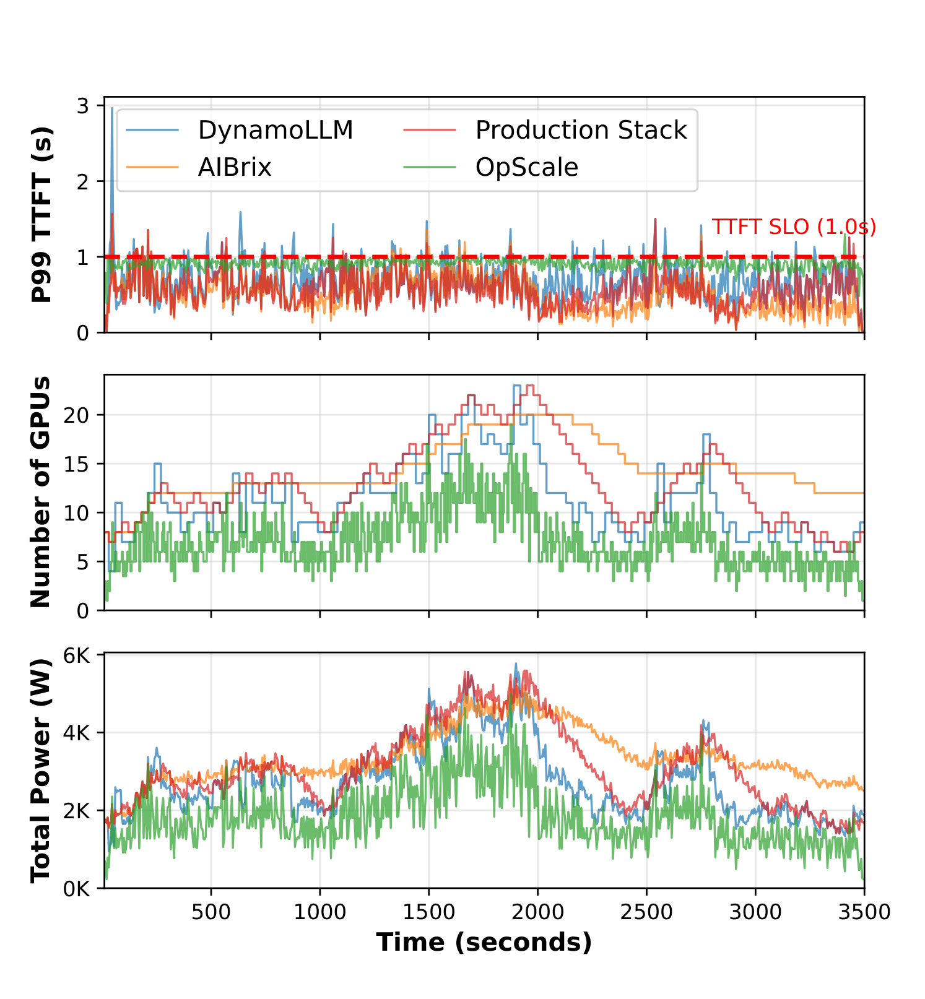
Figure 13 取 Qwen2-7B trace 的一小时片段。顶部 P99 TTFT 中，OpScale 绿色曲线大部分保持在 1 秒 SLO 线下；中部 GPU 数随流量起伏，OpScale 往往比三条模型级曲线更早缩回，也较少一次跳升整组副本；底部 total power 与 GPU 数大体同向。全 trace 的汇总是：OpScale 平均使用 7.1 张 GPU，而 DynamoLLM、AIBrix、Production Stack 分别为 11.2、14.3、13.0；SLO attainment 为 98.4%，baseline 约 88%-95%。关键并非“资源越少延迟越低”这种反常结论，而是容量被送到当前 critical operators，排队不再被非瓶颈副本的显存占用挤压；同时亚秒 scale-out 缩短了 burst 出现后等待资源的区间。图也显示 OpScale 并非完全消除 TTFT 波动，靠近高峰仍有尖刺，说明经验 profile 与一秒控制周期只是显著缓解而不是预测所有突发。
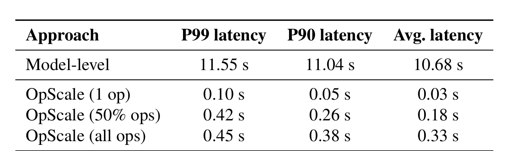
Table 1 把响应速度拆成不同强度：模型级扩容 P99/P90/平均分别为 11.55/11.04/10.68 秒；只加一个 operator 的 OpScale 为 0.10/0.05/0.03 秒；同时扩 50% operators 时为 0.42/0.26/0.18 秒；即使扩全部 operators，仍只有 0.45/0.38/0.33 秒。这里“all ops”快于 full-model instance 并不矛盾：前者复用已经运行的 engine control plane，只为必要 operator 加载与注册副本；后者还要构造完整 engine 实例。作者没有把 warm standby 当零成本 baseline，因为它会长期占据整模型的 GPU memory 与 compute capacity。该口径把“启动快”与“预留多”明确分开，也说明 Table 1 测的是 on-demand actuation，不是把空闲副本提前藏在系统里。
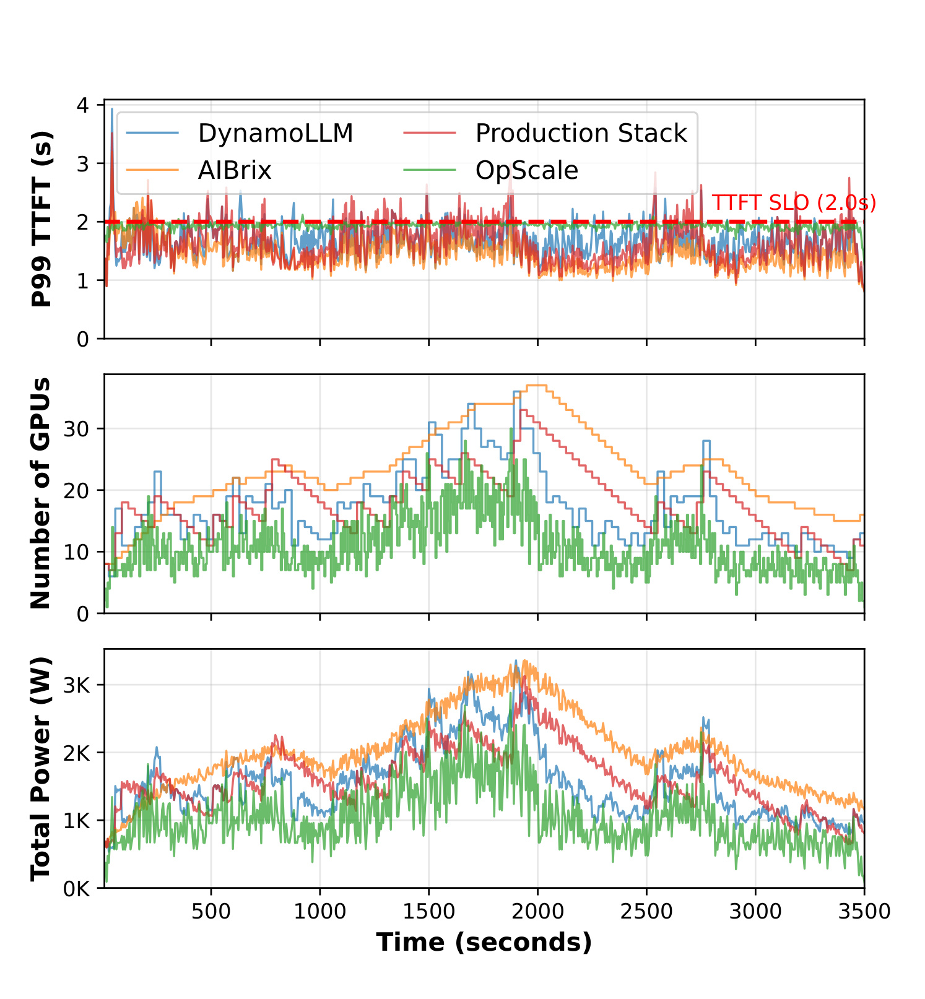
Figure 27 在同样的一小时 production trace 结构下换成 Qwen2-57B-A14B MoE，TTFT SLO 为 2 秒。OpScale 平均 10.8 张 GPU，DynamoLLM、utilization baseline、queue baseline 分别约 17.3、23.1、18.0；SLO attainment 为 98.1%，对手为 84.2%-97%。MoE 的收益更大，原因与 Figure 4 的 operator heterogeneity 对应：expert/linear operator 的 workload sensitivity 分散，复制 57B 整模型会重复大量当下并非瓶颈的权重。中部曲线显示 baseline 在高负载时经常超过 30-35 张，而 OpScale 峰值约 25 张；顶部 P99 TTFT 并未因 GPU 更少而更差。这个结果支撑“异质性越强，细粒度越有机会”，但仍是同一 Qwen 系列和相同 trace 回放，不足以证明所有 MoE routing 分布或 expert imbalance 都能得到相同比例。
功耗对比也需要读清口径。Qwen2-7B 上，OpScale 在 P50/P90 cluster power 相比最佳 power-aware baseline $\mu$-Serve++ 低约 20%/16%；MoE appendix 中，带 DVFS 的 OpScale 在 P90 约再低 15%。这些结果说明减少 active GPU count 往往比只降频更有效，却不意味着每张 GPU 更省电。论文明确报告 OpScale 单卡平均功耗可能更高，例如 282 W 对 245 W，因为保留下来的 GPU 利用率更高；集群总功耗下降来自设备数更少。这正是资源效率与单卡功率必须分开的地方。
3.3 相同 SLO 的成本、固定预算吞吐与硬件差异
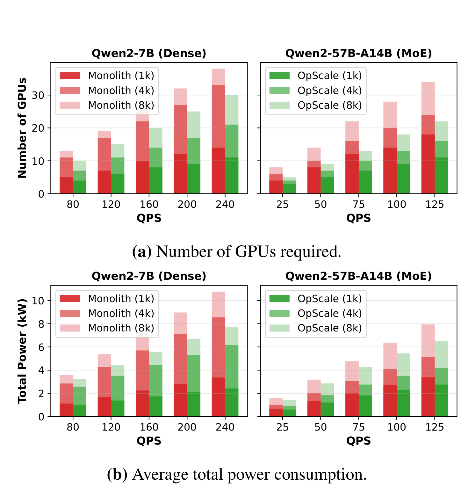
Figure 16 固定 latency SLO，再随 QPS 增加容量。上排显示 GPU count，下排显示 average total power；左右分别是 Qwen2-7B dense 和 Qwen2-57B-A14B MoE，颜色区分 1K、4K、8K sequence。1K 请求下，OpScale 平均少用 20.1% dense GPU 与 35.7% MoE GPU；更长请求的峰值节省在 4K 达 36.3%，到 8K 回落为 22.1%。这与理论分析一致：中等上下文留下最多可共享 slack，特别长序列会让 Attention 和 SM 更接近饱和，共置空间缩小。下排的集群功耗在高负载下降 14%-28%，曲线比 monolith 的整卡阶梯更平滑。headline 的“最多 36.3%”是特定负载、长度和 SLO 下的峰值，不能替代全曲线，也不应解释为任意 QPS 都稳定节省三分之一。
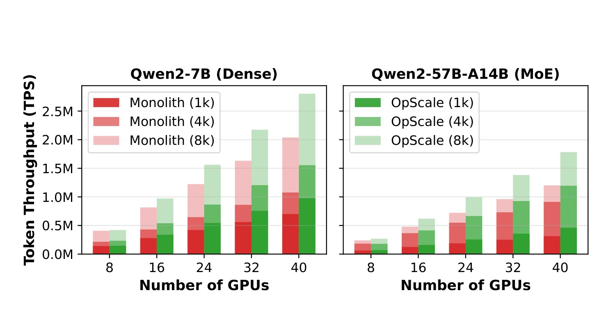
Figure 17 反过来固定 8 至 40 张 GPU，不再问“达到 SLO 最少花多少”，而是逐步增加 arrival load，直到系统触碰 SLO，再报告最大可持续 input token throughput。Qwen2-7B 在不同 cluster size 与 sequence length 上提高 3%-38%，Qwen2-57B-A14B 在 40 GPU 时最高提高 44%。柱状图中短上下文和 MoE 的差距更大，因为 OpScale 能把新增 capacity 定向给 heavy linear、FusedMoE 或 Attention，而 lightweight operator 继续共置在剩余 SM/memory 中。随着长上下文把多数关键路径算子一起推向饱和，绿色与红色柱的差距会缩小。该实验说明 operator-level provisioning 不只适合动态 autoscaling：即使 cluster size 静态不变，重新分配模型内部 capacity 也能提高 goodput。
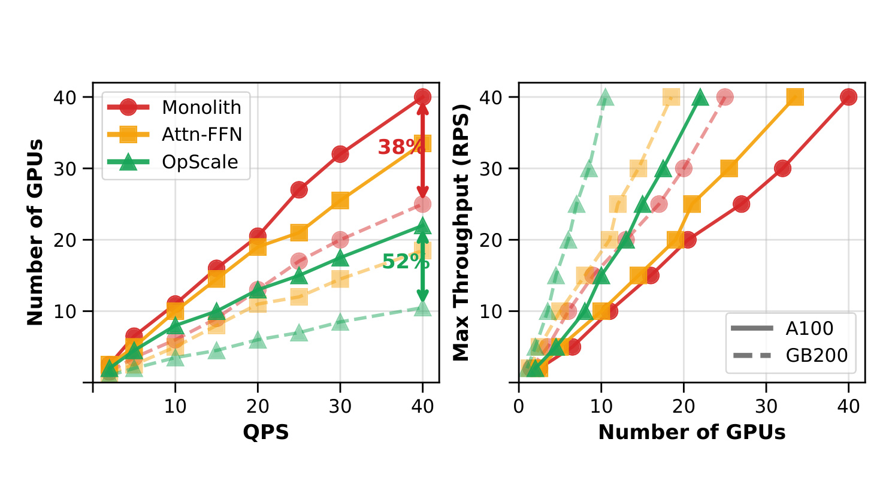
Figure 18 左图比较满足负载时所需 GPU 数，右图比较固定 GPU 的最大 RPS；红色 Monolith、黄色 Attn-FFN、绿色 OpScale 分别代表整模型、只拆 Attention/FFN、全 operator 三种粒度，实线/虚线区分 A100 与 GB200。A100 上，OpScale 相比 monolith 最多减少约 33% GPU，对应约 1.7 倍 throughput；GB200 同一 NVL domain 上，峰值 GPU reduction 达 52%，Attn-FFN 则约 38%。更快互连降低 activation 在 operator 边界移动的代价，使 finer placement 有更多可行解。这个结果既证明全 operator 粒度比固定 Attn-FFN 分块更灵活，也暴露硬件依赖：若跨机通信慢、operator data volume 大或 topology 不规则，逻辑上的共享空间未必能转化为物理节省。
作者在附录还量化通信：多数 operator 的 transfer overhead 低于计算时间的 5%，但 SiLU Mul 等可到约 20%。placement 因而先偏好 intra-device，然后是 intra-server NVLink/NVL，最后才跨 server InfiniBand。GB200 数字的优势不仅来自计算芯片本身，也来自“24 张卡位于同一高速互连域”的部署口径。对工程复现，最重要的不是追逐 52% 峰值，而是用自己的 topology、payload 和共置 slowdown profile 重算可行边界。
3.4 鲁棒性、近似误差、控制开销与阶段边界
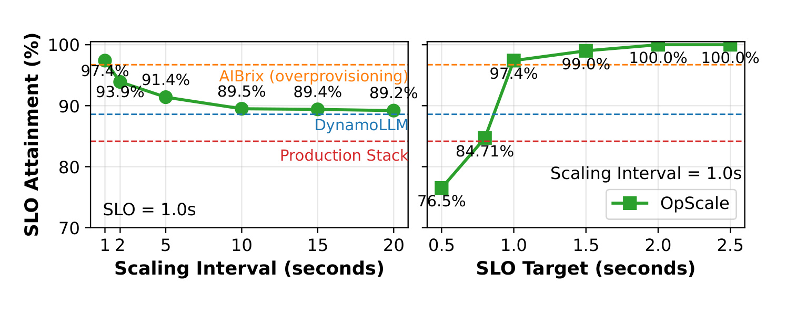
Figure 19 左侧将 OpScale 的控制间隔从 1 秒放宽到 20 秒：一秒时 SLO attainment 为 97.4%，间隔变长后逐步下降，20 秒约 89%；模型级 baseline 的水平线表明 AIBrix 较高 partly 来自 overprovisioning，DynamoLLM 与 Production Stack 则较低。右侧固定一秒 interval，改变 OpScale 自身 SLO target：目标放宽时达到 99%-100%，收紧到 0.8 秒时仍与 Production Stack 在 1 秒 target 的表现相当。该图证明收益不是对某个阈值的单点调参，但也指出核心依赖：如果 runtime 只能每 20 秒更新一次，operator granularity 的响应优势会明显缩水。系统需要低毫秒控制开销、亚秒 actuation 与可靠 traffic statistics 同时成立。
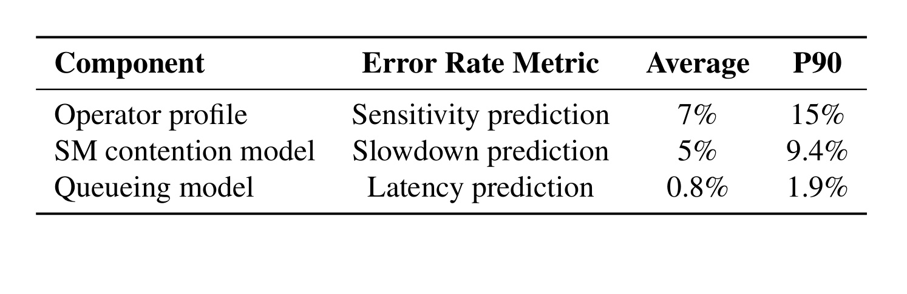
Table 2 把控制面三种近似与 held-out measurement 对比。Operator profile 的 sensitivity prediction 平均误差 7%、P90 15%；SM contention slowdown prediction 为 5%/9.4%；端到端 queueing latency prediction 为 0.8%/1.9%。queue model 数字很小，说明将 per-operator sojourn time 沿 DAG 组合在这些 trace 回放中较准确；profile 误差更大，但 provisioning 主要依赖相对瓶颈排序，而不是要求每个 kernel latency 绝对无误。仍要注意，pairwise interference 乘积近似三方共置，未覆盖任意 kernel-level temporal multiplexing；在不同 GPU、不同 kernel fusion 或 HBM 压力模式下，误差可能换挡。表中 P90 15% 也意味着贴着 SLO 边界部署时必须保留 buffer $\epsilon$，否则少数 profile 偏差就会把“预测可行”变成线上违约。
online optimizer 本身不是瓶颈。Qwen2-7B 全 scaling plan 中位数 2.6 ms、P99 3.2 ms，其中 provisioning 约 2.5 ms、placement 0.1 ms，在一秒 interval 内约有 370 倍时间余量；Qwen2-57B-A14B 总计 4.4 ms。执行面 dispatch 约 1.5 ms，占一次约 500 ms prefill 的 0.3%。这些数据支撑“控制 loop 可以一秒跑”，但没有覆盖控制器失效、profile 更新风暴、跨 region deployment 或大规模多模型同时 replan 的尾部开销。
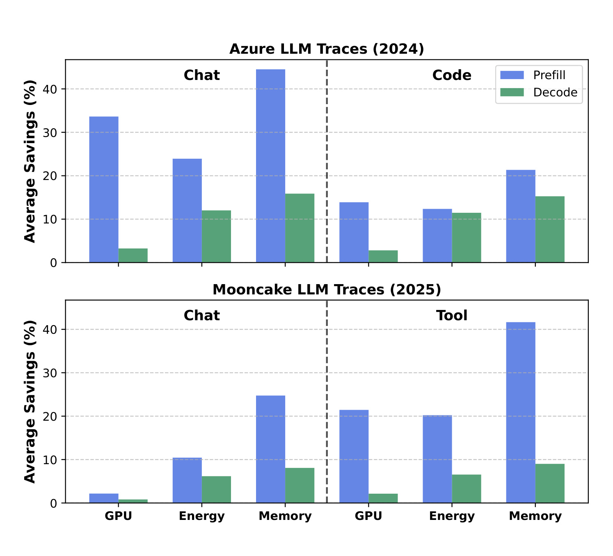
Figure 26 将 Qwen2-7B 拆成 prefill 与 decode，并使用 Azure 2024、Mooncake 2025 两套 production trace。Azure Chat 的 prefill 最多约节省 35% GPU、25% energy、45% memory，decode 多数低于 15%；Mooncake Chat/Tool 也显示 prefill 在 GPU、energy、memory 上整体更高，最高 memory savings 约 41%。原因是 prefill 计算密、burst 更集中、算子 sensitivity 差异更容易形成可重分配 slack；decode 虽有未饱和 SM，却承受更紧 TBT 和持续 KV memory 压力。论文概括 prefill 的优化机会约为 decode 的 2-3 倍。这个阶段差异是部署边界而非负面结果：prefill-decode disaggregation 可以与 OpScale 互补，把 operator-level elasticity 优先用在 prefill，而不是要求 decode 复制同样策略。
实验也留下几个外推缺口。所有 baseline 虽共享 nano-vLLM data plane，仍是作者移植实现，未必完全复现各项目 production stack 的工程优化；production trace 提供真实到达与长度分布，但执行是受控 replay，不是跨厂商在线流量；主要动态实验是 dedicated single-model cluster，没有多租户公平性、跨模型干扰与抢占恢复；代码未公开使 17K 行改动、profile grid、SLO buffer 和 baseline 配置难以独立审计。因此，当前证据足以支持“operator-level scaling 在这些硬件与负载中有效”，但还不足以断言它已成为所有 LLM serving 场景的默认方案。
4. 总结
4.1 我的判断与工程含义
OpScale 最有价值的地方不是又设计一条 autoscaling policy，而是改变了 policy 可以操纵的资源原语。模型级系统无论预测多准，最终只能整副本加减；OpScale 则利用 operator profile 把逻辑 capacity 分到当前 critical path，再用干扰和互连模型确认物理 placement，最后让 runtime 在请求进行中动态注册与路由。production trace 上“更少 GPU 却更高 SLO attainment”由此变得可解释：它不是凭空提高单卡算力，而是减少非瓶颈复制、缩短 actuation delay，并控制共置后的排队与干扰。
对推荐与检索系统，这种思想也有迁移价值，但迁移对象是系统机制，不是直接照搬结果。生成式召回、重排 LLM 或多模态内容理解服务同样包含 embedding、Attention、MoE、reranker 等异构 stage；若用户请求长度、候选量或模态组合改变瓶颈，可以考虑 stage/operator pool 的独立 capacity。但推荐主链路通常 SLO 更紧、模型更小、feature fetch 与 RPC 占比更高，Figure 10 所暗示的小模型低异质性会削弱收益。先做 operator/stage sensitivity profiling，再决定是否值得细分，比先把系统拆散更稳妥。
4.2 局限与风险
- 工作负载与部署外推有限。 production traces 是真实流量统计，但主要结果来自受控 replay、Qwen2 dense/MoE 和 dedicated single-model cluster；多租户 fairness、跨模型 interference 与 noisy neighbor 尚未验证。
- 硬件和 topology 强相关。 GB200 的峰值 52% reduction 来自单一高速 NVL domain，不能直接套到多机 A100、PCIe-only 或跨 region 集群；operator activation volume 增大时通信可能抵消 sharing。
- profile 会随实现漂移。 kernel fusion、FlashAttention 版本、quantization、batch scheduler、模型升级都会改变 $T_v,M_v,C_v$ 与 $I_{d,v}$。跨层/跨版本复用虽降低成本，也带来旧 profile 误导 placement 的风险。
- 近似干扰模型仍有尾部误差。 pairwise slowdown 乘积不能完整表示三方以上共置和 temporal multiplexing；operator profile P90 误差达 15%，贴着 SLO 部署必须预留安全 buffer。
- 适用场景不是全集。 megakernel 把多个算子融合后，清晰 operator boundary 和独立 scaling 空间会消失；decode 的紧 TBT 与 KV memory 约束也使收益明显低于 prefill。
- 复现证据尚不闭环。 当前没有核验到公开仓库，baseline 移植、17K 行实现、profile sampling、trace preprocessing 和配置细节无法由第三方完整复查。
4.3 后续跟进
- 优先复现 profiling 与 oracle，而不是先重写 runtime。 在自有模型上测 $B,L,S$ 三维曲线、queue stability 和 pairwise interference，确认异质性足以覆盖通信与控制成本；若小模型曲线接近，就应停止复杂化。
- 做 prefill-only 的最小原型。 Figure 26 显示 prefill 机会比 decode 大 2-3 倍，可先在已有 prefill-decode disaggregation 上独立扩缩 Attention/MLP/MoE pool，降低一次性改造风险。
- 严格复刻 A100/GB200 两套拓扑口径。 除 GPU count，还要记录 NVLink/NVL/InfiniBand 域、activation payload、per-GPU power 与 cluster power，避免把新硬件和细粒度机制的收益混在一起。
- 关注代码发布与多租户扩展。 一旦仓库开放，应核对 baseline 配置、SLO buffer、profile grid 和 failure recovery；更关键的后续问题是跨模型 operator packing 如何保证 tenant fairness 与故障隔离。
综合来看，OpScale 提供了一条证据较完整的系统路线：先证明 operator heterogeneity，再把它变成 profile；用 queue-aware provisioning 产生逻辑副本，用 interference/locality-aware placement 落到 GPU，最后用动态 registry、弹性显存和多流执行把计划送进 serving runtime。其结果在 production trace、A100 与 GB200、dense 与 MoE 上方向一致，但峰值收益高度依赖模型规模、阶段、互连和 SLO。把它视为“可选择的新 scaling primitive”比视为“模型级 autoscaling 的普遍替代”更符合论文证据。